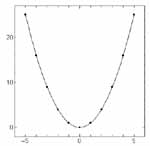

Ngraphはデータファイルからデータを読み込みグラフを作成します。 従って、まずデータファイルを用意しなければなりません。エディター、計算プログラム、あるいは測定装置コントロールソフトなどからデータファイルを作成します。
グラフにするデータファイルを用意したらNgraphを起動します。次に作成したいグラフの種類を決めます。Ngraphでは以下の3つに分類されています。
初期状態ではフレームグラフが一つ作成されています。フレームグラフの４つの軸のスケールはまだ設定されていませんので、軸の基線を示す枠だけが表示されています。 これで良ければ次に進みます。 他の種類のグラフを作成するには、[グラフ]-[新規作成]([Graph]-[New graph])メニューで作成するグラフの種類を指定します。
 フレームグラフ(Frame graph)
4つの軸で囲まれたグラフ方眼グラフ(Section graph)
4つの軸で囲まれ、方眼線の入ったグラフ交差グラフ(Cross graph)
X-Y２軸のグラフ


次に、準備してあるデータファイルを開きます。 データファイルを開くには様々な方法が有りますが、取り敢えず[データ]-[開く]([Data]-[Open])メニューを選び、ファイル選択のダイアログボックスでデータファイルを開いてください。
データファイルを開く方法は他にも用意されています。いずれの方法でも、データファイルを指定すると次いでプロット方法などを指定するデータダイアログボックスが開きますが、取り敢えず OK で閉じてください。
- 下図のコントロールボタンを押す。
- Data Window上でマウス右ボタンを押してポップアップメニューを出し、"Open" メニューを選ぶ。
- ファイルマネージャー等からデータファイルを選び、Viewer Window または Data Window 上にドラッグ&ドロップする。
Ngraphではファイルを開いても自動的には描画しないようになっています。グラフを描画するには下図のボタンを押してください。
描画する方法は他にも用意されています。この様にして描画すると軸のスケールは少し余白をとるように自動的に設定され、グラフが描画されます。
- [出力]-[描画]([Output]-[Draw])メニューを選択する。
- Viewer Window をアクティブにしてスペースキーを押す。